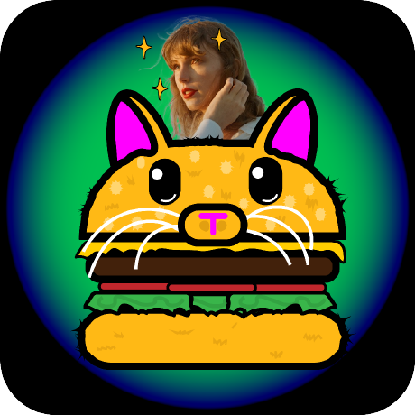

Catsburger
Hello
My name is Alexey. I'm from Petropavlovsk-Kamchatsky, Russia.
I can write code in C++. I'm a professional player in the sandbox game Scrap Mechanic.
I really enjoy listening to Taylor Swift and Olivia Rodrigo.
Lessons
1st shift
2nd shift
12:30 PM